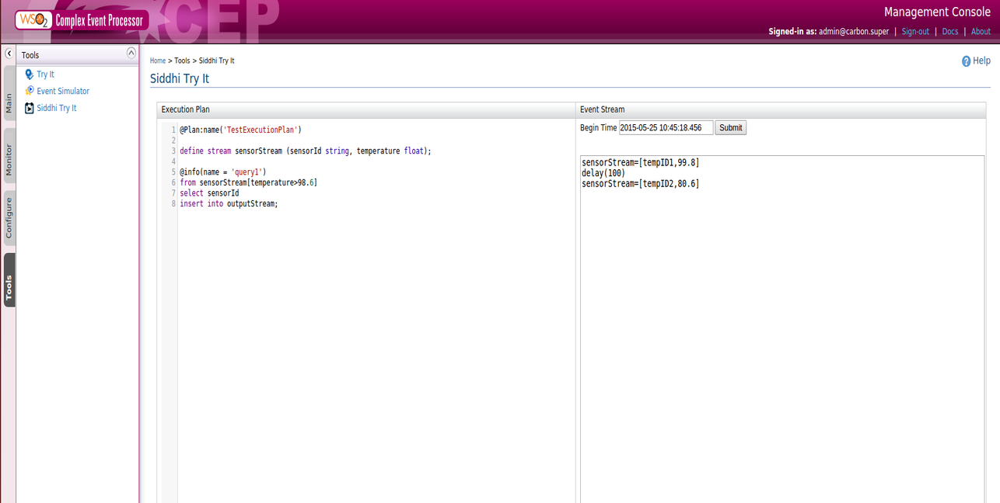

Siddhi Try It is a tool used for experimenting event sequences through Siddhi Query Language (SiddhiQL) statements. You can define an execution plan to store the event processing logic and input an event stream to test the Siddhi query processing functionality.
1.Start the CEP, log in to the management console , select Tools and click Siddhi Try It.
2.Enter an execution plan, an event stream and a time stamp to start sending events.

Finally click the Submit button so you can view the results according to the defined execution plan. Furthermore you will be able to separately view query outputs along with the streams.